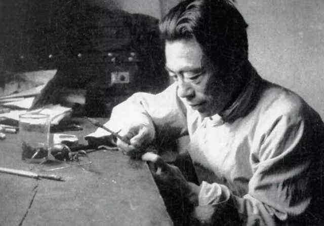
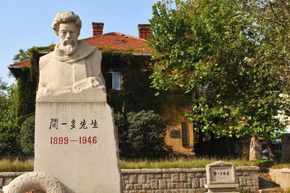
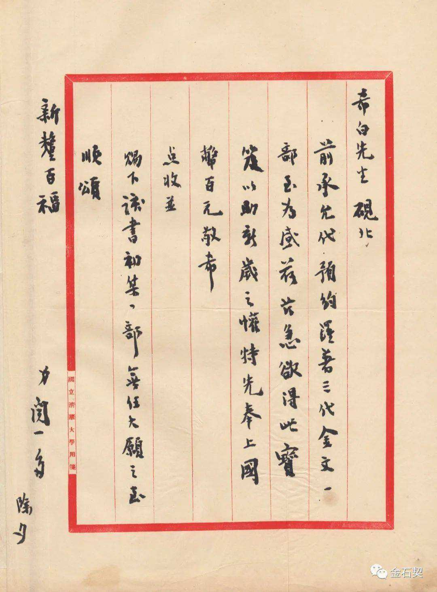

·Introduction
Wen Yiduo's photo
Wen Yiduo (November 24, 1899 - July 15, 1946), whose real name is Wen Jiahua, courtesy name Yousan, was born in Bahe Town, Xishui County,
Hubei Province on November 24, 1899. He is a modern Chinese poet, scholar, democratic Warrior .
At the outbreak of the Second Sino-Japanese War, he and many other intellectuals from northeastern China migrated to Kunming, Yunnan.
There he was able to continue to teach, this time in the wartime National Southwestern Associated University. Wen stopped writing poetry in 1931 and became increasingly involved in social criticism.
He became politically active in 1944 in support of the China Democratic League.
His outspoken nature led to his assassination by secret agents of the Kuomintang after eulogizing his friend Li Gongpu's life at Li's funeral in 1946.
There is a monument to Wen at the Yunnan Normal University campus in Kunming, as well as a large statue.
A small memorial to him, including a wall portrait painted from a famous picture of him smoking his pipe is found in a walkway by his former home
in the Green Lake area of Kunming. He and his wife, Gao Zhen, are buried at the Babaoshan Revolutionary Cemetery in Beijing.
·Biography

In 1905, he entered Miangexuan Primary School.
In 1912, he was admitted to Class B of Tsinghua School in Beijing.
In 1920, he compiled a collection of poems "Ancient Wattle Collection" and "True Self Collection".
On March 16, 1923, the long poem "In the Garden" was written; in September, the first new collection of poems "Red Candle" was published.
In early January 1925, he participated in the launch of the "Chinese Drama Improvement Society";
in July, the poem "Song of the Seven Sons" was published;
in September, he was hired as the preparatory commissioner of the Beijing Academy of Fine Arts.
In January 1928, the collection of poems "Dead Water" was published.In August 1932, he was appointed as a professor in the Department of Chinese Language and Literature of Tsinghua University.
On July 15, 1946, at the memorial meeting for Li Gongpu,
he reprimanded the Kuomintang for the crime of assassinating Li Gongpu.
In the afternoon, he was assassinated by the Kuomintang agents.
·Thoughts

Wen Yiduo, as a vernacular poet or a classic romantic poet in the May Fourth period, often used poetry as a trumpet of propaganda, exaggerating the function of poetry,
instead of expressing the general emotion of human beings in traditional poetry and advocating individuality.
Wen Yiduo pays attention to the interpretation of original motifs in the selection of content,
such as life and death, love and sorrow, faith and ideals, compassion and anger, etc.
Emotionally, it focuses on conveying the most common feelings of human beings, such as nostalgia, love, family, friendship, separation and so on.
From Wen Yiduo's poems, on the one hand, readers hear the cry of the times, and on the other hand, they also feel the chanting from their own souls.
·Works

"Tears of the Night" essay
"Lamentations Under the Great Wall" poetry
"The Death of Li Bai" poetry
"The Wrong Way of Drama" paper
"Song of the Night" poetry
·Reference
Wen Yiduo - BaiduWen Yiduo - WiKipedia